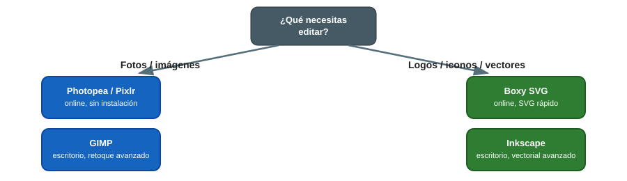

🖼️ Edición de Imagen e Impresión
El Aula ATECA no dispone de hardware específico en esta categoría; el valor está en el software (online y de escritorio) para retoque fotográfico, diseño vectorial y preparación de artes finales para impresión.
¿Qué herramienta uso? (guía rápida)

{ width="800" }1. Software online (sin instalación)
Photopea
Editor de imagen tipo Photoshop que funciona directamente en el navegador, compatible con archivos .psd, .ai, .xd y .sketch. Ideal para aulas sin permisos de instalación de software.
- Abre photopea.com{target="_blank"}, arrastra la imagen o crea un lienzo nuevo.
- Interfaz por capas casi idéntica a Photoshop: útil para transición a herramientas profesionales.
- Guarda tu trabajo con Archivo → Guardar como PSD para poder retomarlo más tarde (el navegador no guarda automáticamente).
Pixlr
Editor online más sencillo que Photopea, con herramientas de IA (recorte automático, generación de fondo) y plantillas listas para redes sociales.
- pixlr.com{target="_blank"}
Boxy SVG
Editor vectorial online centrado en SVG, útil para preparar logos y trazados que luego se laminan para corte/grabado o se importan como vectores en diseño 3D.
- boxy-svg.com{target="_blank"}
2. Software de escritorio
GIMP (edición rasterizada)
Alternativa libre y gratuita a Photoshop, completa para retoque fotográfico, composición por capas y exportación en múltiples formatos.
- gimp.org{target="_blank"}
- Uso recomendado: retoque de fotografías para la web del centro, carteles, materiales de proyectos de innovación.
- Formato de trabajo nativo:
.xcf(guarda capas y ajustes); exporta a.png/.jpgsolo al finalizar.
Inkscape (diseño vectorial)
Alternativa libre y gratuita a Illustrator, para logotipos, ilustraciones e infografías vectoriales.
- inkscape.org{target="_blank"}
- Uso recomendado: preparación de archivos vectoriales para corte láser/vinilo o para acompañar diseños 3D (grabados, etiquetas).
- Formato de trabajo nativo:
.svg(escalable sin pérdida de calidad, ideal para logotipos que se usarán en varios tamaños).
3. Buenas prácticas en el aula
- Prioriza las herramientas online (Photopea, Pixlr, Boxy SVG) en equipos sin privilegios de instalación.
- Exporta siempre en un formato editable (
.xcf,.svg,.psd) además del formato final (.png,.jpg,.pdf) para poder retocar el trabajo más adelante. - Para impresión física, exporta a PDF con sangrado si el diseño va a imprenta, o a PNG a la resolución final (mínimo 300 ppp) si es para pantalla/web usa 72-150 ppp.
- Nombra los archivos con la fecha y el proyecto (
20260706-cartel-jornada-ateca.svg) para que cualquier compañero/a pueda encontrarlos y reutilizarlos.
📚 Recursos
- 📖 Tutoriales oficiales de GIMP{target="_blank"}
- 📖 Manual de Inkscape en español{target="_blank"}
- 🌐 Web del Aula ATECA (fuente de este manual): Tecnologías | Aula AtecA{target="_blank"}
📷 Pendiente: añadir capturas de pantalla propias de un proyecto editado en GIMP/Inkscape/Photopea por el alumnado del centro.